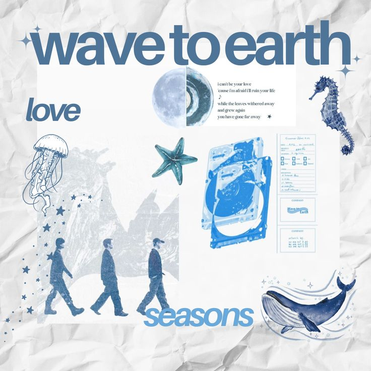

☆ My favourite song is Seasons by Wave to Earth, a South Korean indie band known for their lo-fi, jazz-inspired sound. This song is part of their playlist that I enjoy the most because of its calming melody and emotional depth. Listening to it always brings me comfort and peace.
☆ The song Seasons tells a story about love, sacrifice, and insecurity. The lyrics describe someone who feels unworthy of the person they love, so they choose to step away to avoid causing pain. Despite this, they continue to pray and hope, promising to give their whole life symbolized as “my seasons” to the one they care about.
☆ I like this song because of its soothing melody and heartfelt lyrics. It is perfect to listen to at night or when I want to relax. The honesty in the words makes me reflect on my own feelings, especially the moments when I feel insecure but still want to give my best to the people I love. This makes the song very relatable and meaningful to me.
One of the lines that touches me the most is:
“But I'll pray for you all the time
If I could be by your side
I'll give you all my life,
my seasons.”
This part shows the sincerity and sacrifice in love, which is the main reason why the song feels so powerful.
Play the audio below: